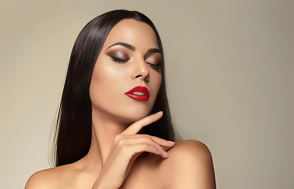
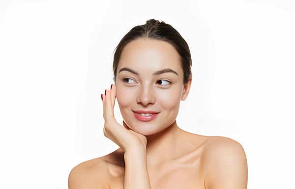
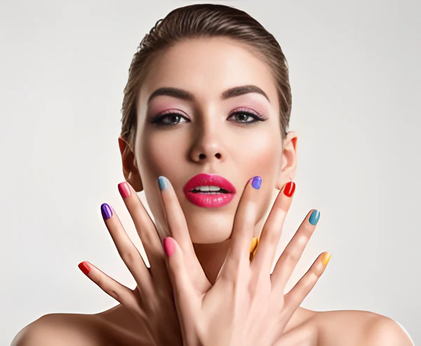

Looks available
Glam Makeup Look
This is a makeup style that emphasizes glamour and sophistication, often using products such as shimmery eyeshadow, winged eyeliner, false lashes, and bold lip color. A glam makeup look can make you shine and stand out in festive occasions, weddings, or any other events where you want to impress.

No-Makeup Makeup Look
This is a makeup style that aims to create a natural and flawless appearance, as if you are not wearing any makeup at all. A no-makeup makeup look can enhance your features and complexion, without looking like you are trying too hard. It is perfect for everyday wear, as it is easy, quick, and flattering on everyone.

Colorful Makeup Look
This is a makeup style that uses bright and vibrant colors to create a lively and cheerful effect, often on your eyes, lips, or cheeks. A colorful makeup look can show off your playful and adventurous side, as well as match your mood and outfit. You can use any color or combination of colors that you like, such as blue, green, yellow, or rainbow.
